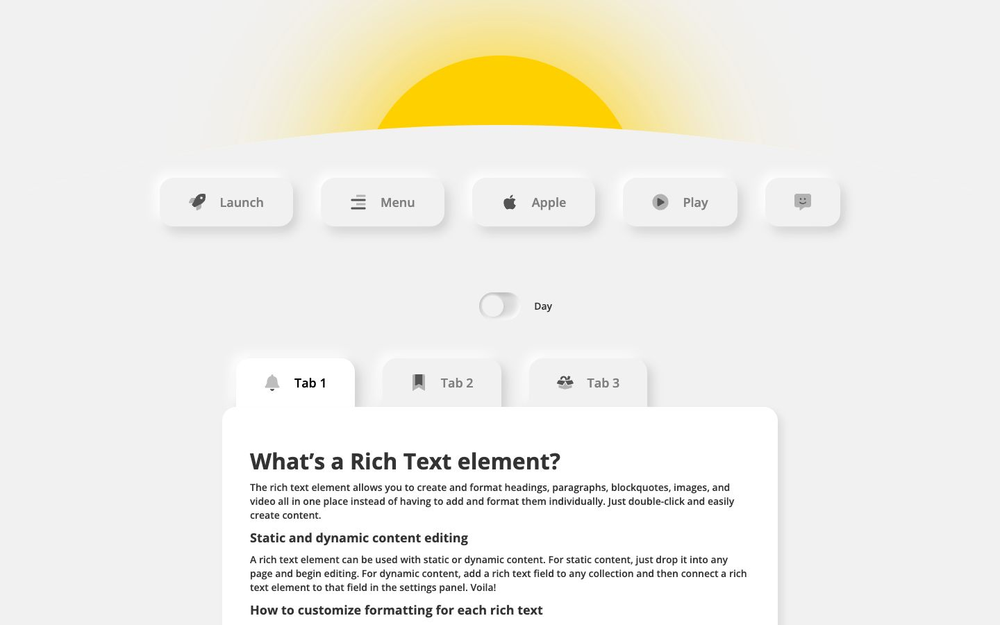

References / Website / 270
Neumorphism Day and Night
A Webflow experiment with raised buttons and a day/night toggle under a rising yellow sun.
- Source
- Neumorphism Day and Night
- Style
- Neumorphism (agent-proposed, not yet reviewed by a person)
- Moods
- Soft, playful
- Evidence
- Captured with
tools/capture.mjs(headless Chrome, 1440 × 900) on 28 September 2026 and inspected. The screenshot shows the first viewport; the measurement covers up to four screens. - Reviewed
- Rights
- Third-party work, stored with credit for commentary. License: unverified. Rights policy
Observed
- A pale gray page with a large yellow sun rising behind a curved horizon at the top.
- Five raised buttons in the page color (Launch, Menu, Apple, Play, and an icon button), each with a white glow above and a gray shadow below.
- A soft pill toggle labeled “Day”, and three tabs: the active one white, the others raised gray.
- A large white card with placeholder rich text fills the lower half.
Why it belongs
The controls follow the style closely, but the white card breaks the single-surface rule: it floats instead of rising, as a Material card would.
Measured: shadows on 87 % of boxes (median offset 9.9 px, median blur 15 px, none hard), borders on 33 %, median radius 20 px.
Measured
Machine-extracted by tools/extract-traits.js on . Full measurement.
- Type families
- Open Sans (100%)
- Type scale ratio
- 1.53
- Median radius
- 20 px
- Mean chroma
- 0.02
- Palette
- #f1f1f1 64%
- #ffffff 17%
- #333333 16%
- #ffd000 2%
- #808080 1%
- #dadada 0%
- #000000 0%

